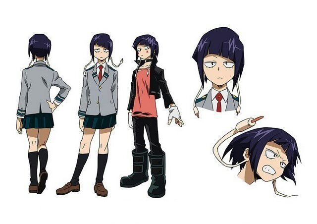

Кьёка Джиро
Кьёка Джиро
- Пол: ♀ Женский
- Рост: 154 см.
- Возраст: 16
- Группа крови: A
- Родился в: Японии
Кьёка Джиро, также известная как Слышащая героиня: Наушный разъём — студентка класса 1-A в академии Юэй, обучающаяся на профессионального героя.
Если ты сделаешь это, мы просто выиграем. У нас нет времени чтобы колебаться, так что сделай это сейчас! Ты хочешь быть героем, не так ли? Тогда давай пройдем этот тест.!
Внешность
У Кьёки короткие фиолетовые волосы и асимметричная челка. Наиболее заметной особенностью являются "ушные разъёмы", напоминающие разъёмы от наушников, которые могут изменять длину. В отличие от других студентов, Кьёка носит жилет поверх школьной формы.

Ее геройский костюм состоит из черной куртки, длинной персиковой футболки, черных брюк и сапог. А так же имеются два красных треугольника, нарисованных чуть ниже глаз, белые перчатки без пальцев и черный чокер. Позже к ее костюму добавляются наушники и два браслета.
Личность
Кьёка самоуверенная, беспристрастная и грубая личность. В большей степени ее холодность и грубость достается тем, кто ее раздражает, в частности ее однокласснику Денки Каминари, который чаще всего становится мишенью ее язвительных комментариев. Кроме того она может быть достаточно агрессивной и может использовать свою причуду, чтобы физически наказывать или сдерживать людей в узде, особенно Денки и Минору Минету. Но в то же время она может быть чуткой и внимательной по отношению к друзьям. Она боится ужасов и испытывает отвращение к наготе.
Как и ее родители, Кьёка очень любит музыку (в частности рок) и умеет играть на нескольких музыкальных инструментах. Тем не менее, она казалась несколько смущенной своими интересами, в основном из-за того, что воспринимала их как совершенно не связанные с героизмом, хотя со временем стала более уверенной.
Возможно, Кьёка имеет комплексы по отношению к своей внешности, поскольку её фигура не такая выразительная, как у её одноклассниц. Так, например, она была обижена тем, что Минору Минета ничего не упомянул о ней, когда пытался подглядеть в девичью раздевалку.
Причуда
 Ушные разъёмы: причуда Кьёки, позволяющая ей вставлять разъемы, свисающие с ушей Кьеки, куда угодно и направлять с их помощью звуки своего сердцебиения, вибрации которого могут быть сокрушительны. Причуда универсальна, радиус ее действия составляет до 12 метров. Кьёка также может использовать разъемы как кнуты, которые достаточно прочны и сильны, чтобы разрушить скалу.
Ушные разъёмы: причуда Кьёки, позволяющая ей вставлять разъемы, свисающие с ушей Кьеки, куда угодно и направлять с их помощью звуки своего сердцебиения, вибрации которого могут быть сокрушительны. Причуда универсальна, радиус ее действия составляет до 12 метров. Кьёка также может использовать разъемы как кнуты, которые достаточно прочны и сильны, чтобы разрушить скалу.